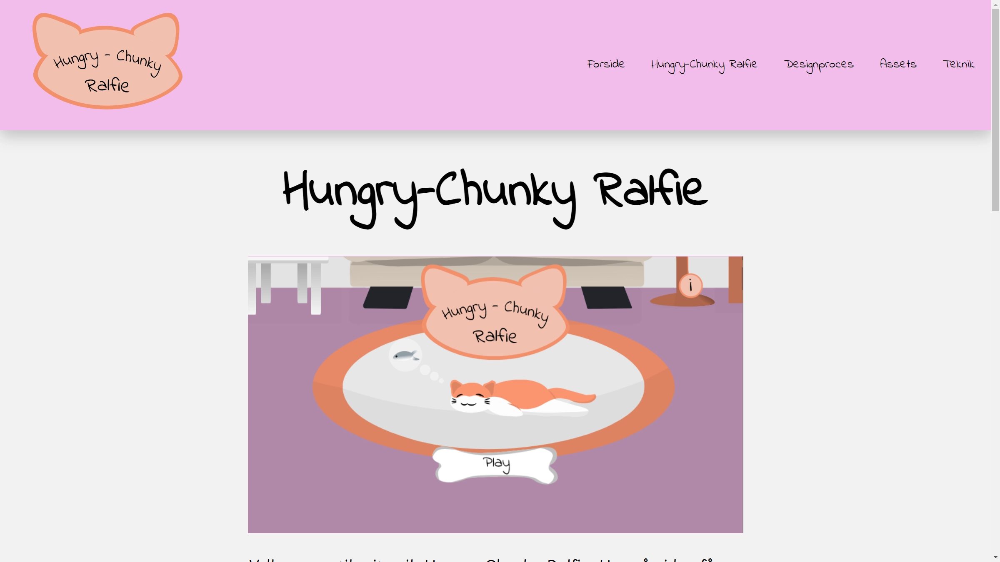

Tema 4: Animation
Hjemmesiden: “Hungry-Chunky Ralfie”
Til tema 4 opgaven skabte jeg individuelt en hjemmeside, hvor jeg udviklede et spil ved hjælp af
JavaScript, CSS og
HTML.
Spillet handlede om at fodre en kat, og jeg valgte dette for at skabe et enkelt og brugervenligt
spil, der passede
til opgavens omfang. Jeg fandt inspiration fra tema 3.
Hvad har jeg lært?
Jeg blev introduceret til spildesign såsom UI-elementer og figur-elementer.
Jeg lærte om nye filformater såsom svg, wav og mp3. Samtidig arbejdede jeg også
grundigere
med JavaScript og
CSS animation (key frames). Jeg fik også indsigt i designprincipper inden for animation,
herunder
karakterdesign og
baggrundsdesign.
Værktøjer
I praksis brugte jeg de nye værktøjer, såsom:
-
Audition blev brugt til redigering
og bearbejdning af lydfiler, såsom mp3 og wav. -
Illustrator blev brugt til at skabe illustrationer, der var nødvendige for spillet.
-
Chrome/Firefox “Inspector tool” blev benyttet til inspektion for eventuelle fejl, især under udførelse af animationer.
-
Ved JavaScript blev der arbejdet med funktioner, variabler, events, betingelser og math.random, blandt andet.
-
Modellerings- og strukturprincipper blev anvendt til at skabe et overblik over spillets forløb og de forskellige elementer i spillet.
Disse værktøjer var grundlaget for udviklingen af mit spil.
Proces
Under min proces har jeg fokuseret på skitsering og udvikling af forskellige elementer såsom
figurer,
spilkomponenter og
brugergrænsefladeelementer (UI).
Processen blev dokumenteret løbende, som jeg har lært fra tema 3, da dette giver et bedre
overblik
over
projektet.
Endelige produkt
Nedenfor er resultatet af mit arbejde baseret på tema 4. Hele processen har forbedret mine kompetencer inden for JavaScript og CSS, samtidig med at jeg har opnået en bedre forståelse for spildesign.
Du er velkommen til at udforske siden
og se mit projekt her:
Hjemmesiden:
“Hungry-Chunky Ralfie”